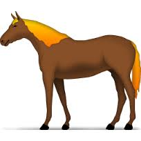

The goal of this project is: To help me get an A in CSCI 1100.
Now, add up all of your points (the number next to the answer you picked) and find out which animal best represents your spirit!
| 4-6 Points | 7-9 Points | 10-12 Points |
|---|---|---|
| You are a sloth | You are a horse | You are a dog |
|  | ||
| Click here to watch some sloths in action | Or click here if you're a horse in spirit | And click here to watch some pug puppies |